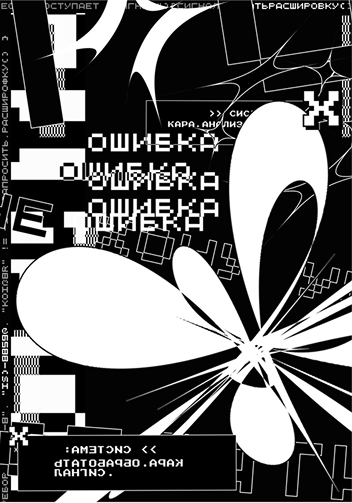

Содержание
Что такое веб-плакат
Попробуйте представить плакат, который реагирует на движение курсора, разворачивает историю при скролле, меняет композицию в ответ на ваши действия. Он живёт в браузере, написан на HTML, CSS и JavaScript — и при этом остаётся плакатом. Со своим высказыванием, визуальным языком и завершённой формой. Именно так устроен веб-плакат — формат, в котором код становится материалом для визуального авторского проекта.
Поэтому, вместо того чтобы начинать с определения, мы пойдём другим путём — разберёмся, из чего веб-плакат состоит, как он работает и где проходят его границы.

Веб-плакат — это всегда одна страница. Собственно во-многом поэтому он и является «плакатом», сохраняя некую концептуальную и фигуративную рамку.
Два типа высказывания
Анализ студенческих работ за несколько лет позволяет выделить два устойчивых типа того, как веб-плакат выстраивает коммуникацию со зрителем. Первый — коммуникативный. Плакат информирует, анонсирует, приглашает. У него есть конкретное сообщение: тема фестиваля, социальная проблема, рассказ о явлении. Визуальная метафора и интерактивность работают здесь как средства передачи этого сообщения — усиливают его, делают ощутимым, вовлекают зрителя в диалог. Такой подход ближе к традиционной функции плаката, перенесённой в цифровую среду.
Второй — экспериментальный. Здесь плакат становится пространством для исследования самого медиума. Автора интересует, что можно сделать с CSS-анимациями, как код реагирует на действия пользователя, где проходит граница между контролем и случайностью. Технический эксперимент в таких работах и есть содержание — визуальный результат формируется в процессе исследования возможностей браузера. Этот тип перекликается с тем, что в цифровом искусстве называют creative coding — практикой, где код используется как средство художественного выражения. Работы Рафаэля Розендаля, например, существуют в похожей логике: каждый его проект — это отдельная веб-страница с одной интерактивной визуальной идеей, без интерфейса, без навигации, без утилитарной функции.